SECCIÓN 4
DEBAJO DEL VEHÍCULO
INSPECCIÓN DEBAJO DEL VEHÍCULO
Suba el vehículo a una altura por encima de la cabeza para llevar a cabo las inspecciones en esta sección.
Inspeccione visualmente los bajos para ver si hay piezas sueltas, faltan componentes, los cables están bien colocados y sujetos o por si hubiera fugas de líquidos. - Apriete las abrazaderas y acoplamientos
- Estado de manguitos, conexiones y tuberías de frenos
- - Daños
- - Fugas de líquido
- - Retorcimiento
- - Dilatación
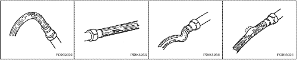


1. TIMONERÍA Y MECANISMO DE DIRECCIÓN
Compruebe la timonería y el mecanismo de dirección.
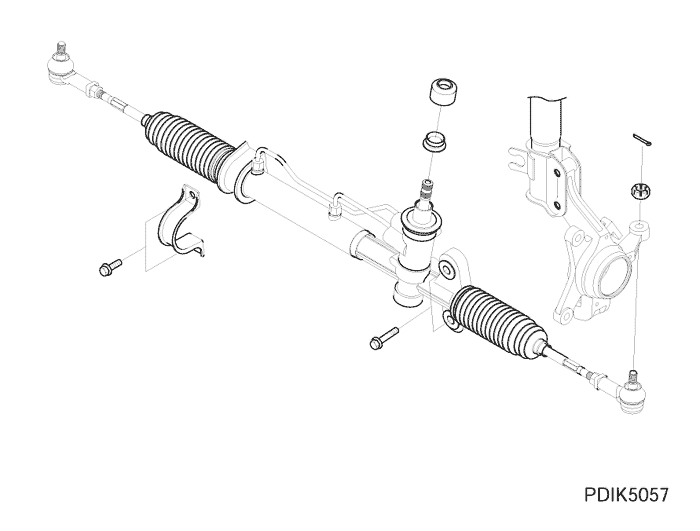
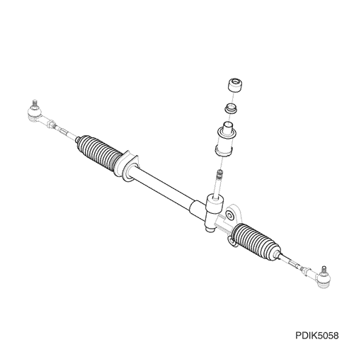
2. POSICIÓN CORRECTA DE LA ABRAZADERA DEL TIRANTE
Compruebe la abrazadera del tirante.
3. SISTEMA DE ESCAPE PARA ALINEACIÓN Y HOLGURA ADECUADA
Compruebe el sistema de escape.
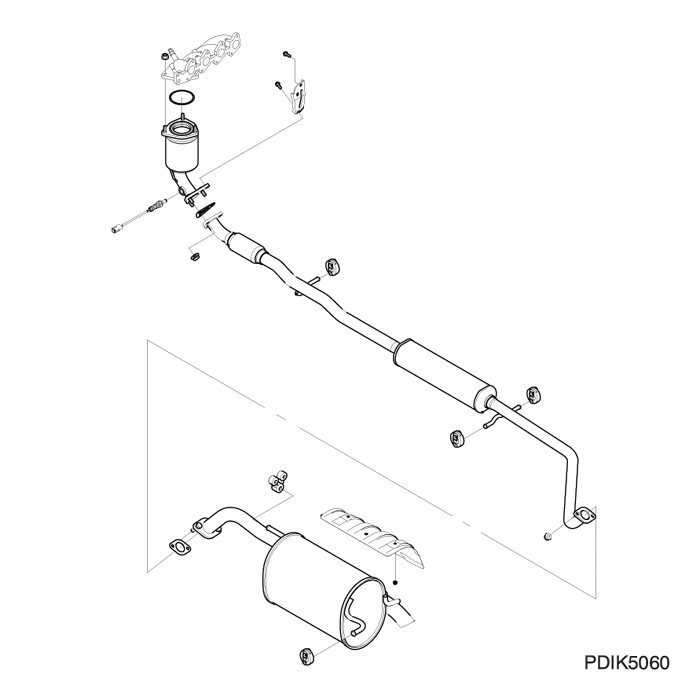
4. SUSPENSIÓN DELANTERA Y TRASERA
Compruebe la suspensión delantera y trasera.
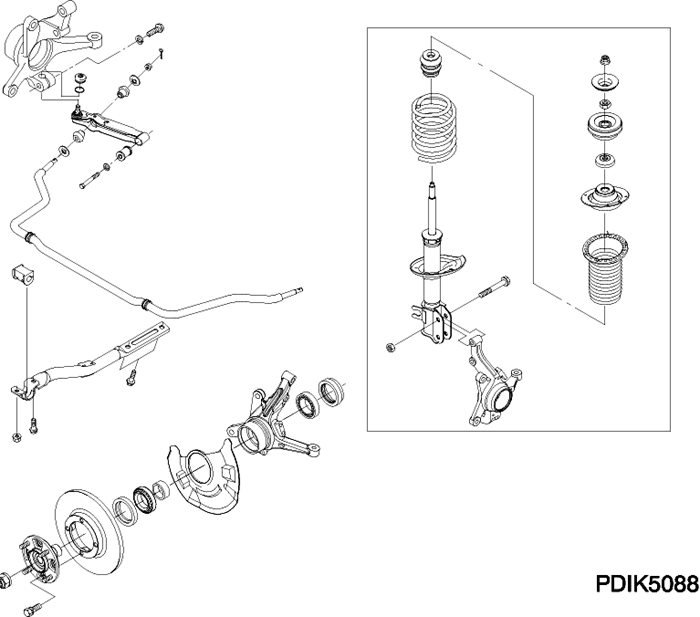
Suspensión delantera
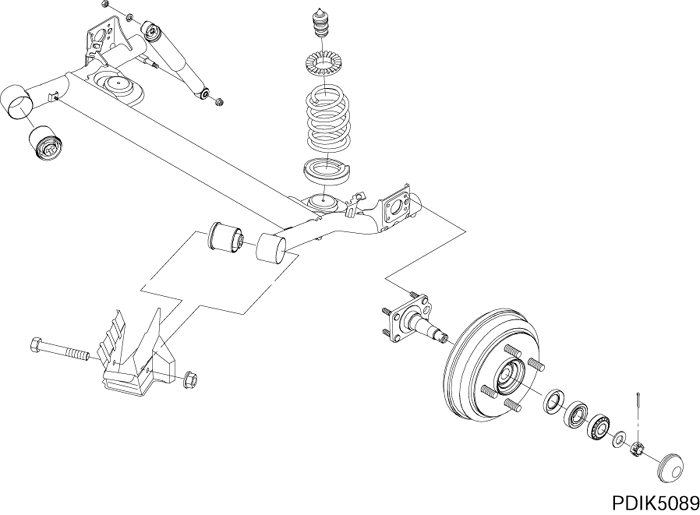
Suspensión trasera
5. COMPROBACIÓN DEL NIVEL DE ACEITE DE LA TRANSMISIÓN MANUAL Y DEL EJE
- - añada la cantidad necesaria
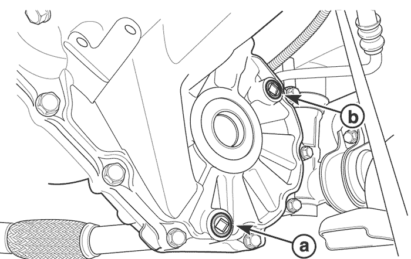
6. SISTEMA DE FRENOS
Compruebe el líquido de frenos, los cilindros, manguitos y tubos de freno y el freno de estacionamiento. Si el vehículo dispone de ABS, también debe comprobarse.
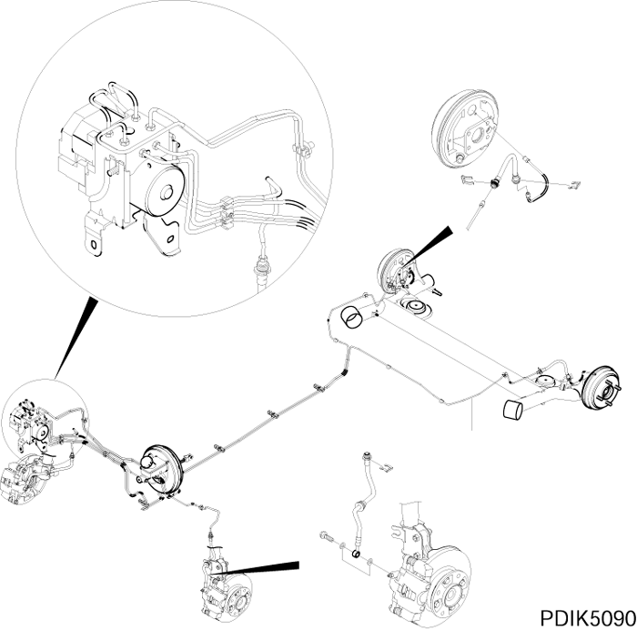
7. SISTEMA DE COMBUSTIBLE
Compruebe el depósito y la bomba de combustible, la conexión de los tubos y manguitos de combustible, inyectores, cartucho y aforador de combustible.
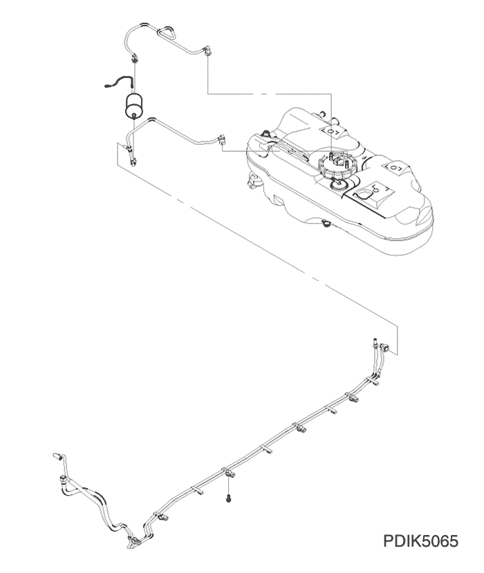
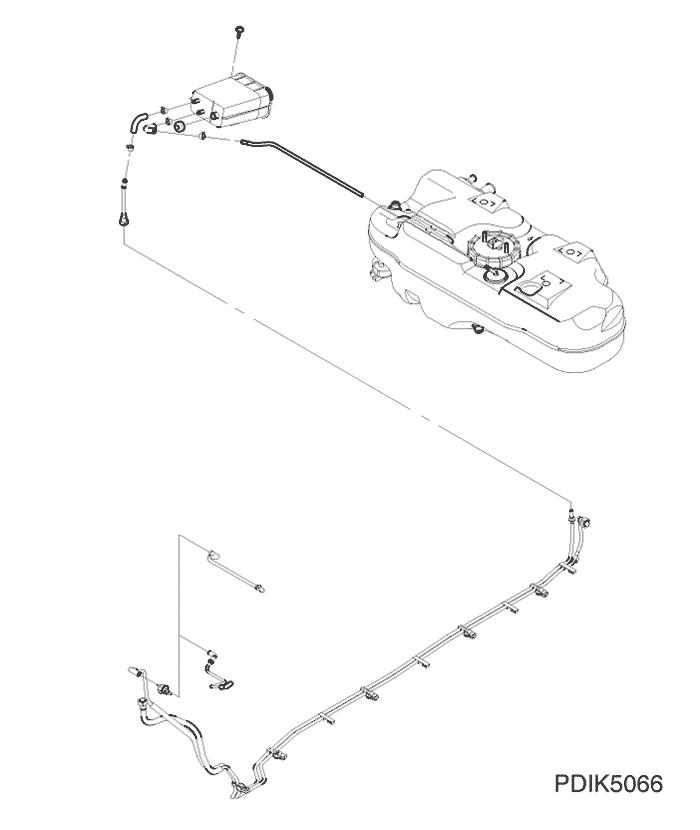
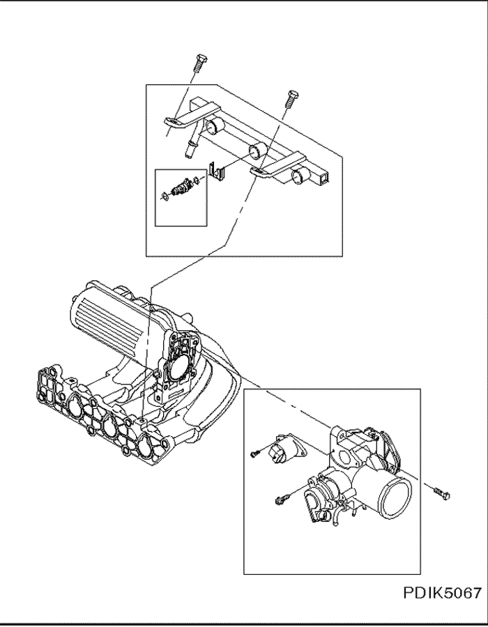
8. ÁRBOL DE TRANSMISIÓN Y EJES MOTORES
Compruebe si el árbol de transmisión está oxidado, dañado, doblado y el estado del conjunto.
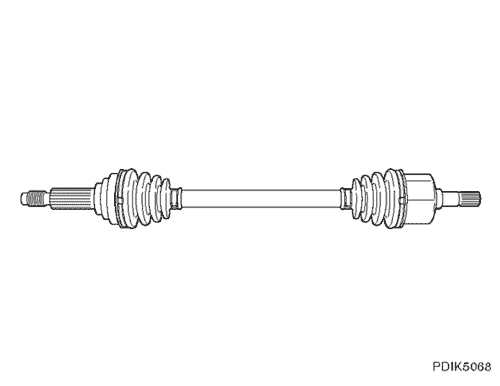
9. INSPECCIÓN VISUAL DE LAS TUERCAS Y ESPÁRRAGOS DE RUEDA
Quite los tapacubos y compruebe los espárragos y tuercas de rueda.
Apriete de las tuercas de rueda: 10 kgf•m (100 N•m)
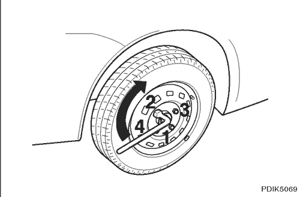
10. INFLADO DE NEUMÁTICOS HASTA LA PRESIÓN ESPECIFICADA
Compruebe la presión de inflado de los neumáticos.
kPa (lbs/pulg)
Neumático | Delanteros | Traseros |
Neumático normal | 210 (30) | 210 (30) |
Neumático de repuesto provisional | 420 (60) | 420 (60) |
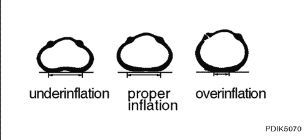